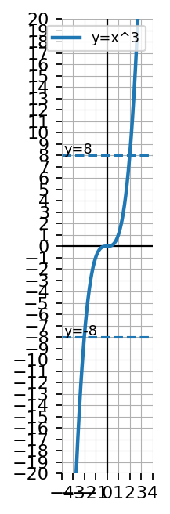
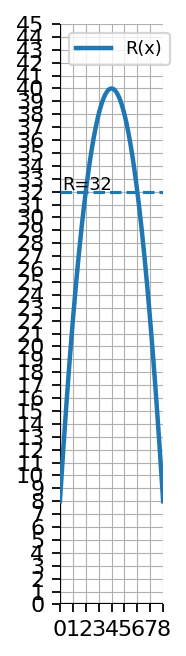
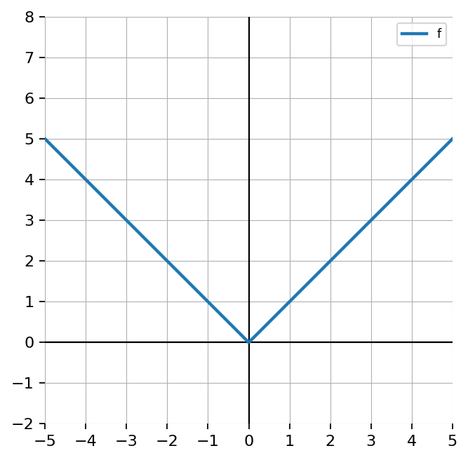

Extra Practice 3.1.4
Solve: \[2(x-1)^2=18\]
Solve: \[4(x-3)^3=108\]
Use the graph of \(y=x^3\).
- Explain why every horizontal line intersects exactly once.
- Explain how this relates to solving cube root equations.

Create a multi-representation problem involving an equation, a graph, and a table where students solve \(x^2=d\). Explain how all three representations show the same solutions.
Let \(p(x)=-3x^2+1\). Evaluate:
- \(p(1)\)
- \(p(-2)\)
Use the table for \(f(x)\).
| \(x\) | -2 | -1 | 0 | 1 | 2 |
|---|---|---|---|---|---|
| \(f(x)\) | 7 | 3 | -1 | 3 | 7 |
- Find \(f(-1)\).
- Find \(f(2)\).
- Find the value(s) of \(x\) where \(f(x)=7\).
Use the table to solve \(q(x)=6\).
| \(x\) | -4 | -2 | 0 | 2 | 4 |
|---|---|---|---|---|---|
| \(q(x)\) | 14 | 6 | 2 | 6 | 14 |
Let \(C(n)=2n^2+n\). Evaluate \(C(3)\) and \(C(-1)\).
The graph of \(g(x)=x^2-4\) and the horizontal line \(y=5\) are shown. Use the graph to solve \(g(x)=5\), then verify algebraically.

Let \(f(x)=2(x-1)(x+4)\).
- Solve \(f(x)=0\).
- Evaluate \(f(0)\).
- Explain the difference between solving \(f(x)=0\) and evaluating \(f(0)\).
The graph models revenue \(R(x)\), in dollars, from selling \(x\) items.
- Use the graph to estimate when \(R(x)=32\).
- Interpret the solutions in context.
- Explain why two different inputs can give the same output.

Write and solve a context problem where a quadratic function has two possible input values for the same output. Explain why both answers are mathematically correct and how the context determines whether both answers are reasonable.
Use the table to determine whether the function appears even, odd, or neither.
| \(x\) | \(-2\) | \(-1\) | \(1\) | \(2\) |
|---|---|---|---|---|
| \(f(x)\) | \(-4\) | \(-1\) | \(1\) | \(4\) |
Justify using the table.
A graph is shown.
- Classify the function as even, odd, or neither.
- Describe how the symmetry appears in the graph.
- Write a possible equation for a function with this symmetry.

Compare the symmetry of \(x^2\), \(x^3\), and \(x^2+x\).
Explain how the structure of each equation connects to its graph.
Create a function that is symmetric about the \(y\)-axis, has a maximum at \((0,5)\), and is not quadratic.
Write the equation, sketch or describe the graph, and justify why it satisfies all conditions.